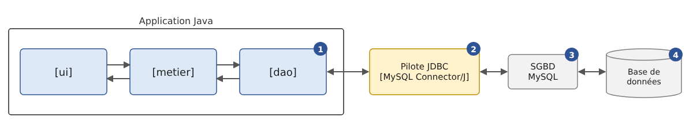

10. Accessing Databases with JDBC
Prerequisites: Version 6 of the [Impots] application, described at the end of this chapter, reuses the [impots-dao], [impots-metier], and [impots-ui] modules from Version 5 (Chapter 6). Before building or opening your projects, you must have installed version 5 in the local Maven repository using the [mvn install] command entered in the [06-architectures/ImpotsV5] folder (see Chapter 6, section on [mvn install]).
10.1. The JDBC driver
Let’s revisit the layered architecture used on several occasions since Chapter 6. So far, the [dao] layer of the [Impots] application has utilized three types of data sources:
- data hard-coded into the code ([HardwiredImpot]);
- data from a text file ([FileImpot]);
- data from a JSON file ([JsonImpot]).
In this chapter, we examine the case where the data comes from a database. The architecture becomes as follows:

In the diagram above, the [dao] and [1] layers communicate with the SGBD (Database Management System) [3], which manages the database [4], through a class library specific to the SGBD used by [2]. This library implements a standard API feature of the Java platform, JDBC (“Java DataBase Connectivity”), which has been part of the JDK since version 1.1 in 1997. It is referred to as a JDBC driver (“JDBC driver”). All common SGBDs have a JDBC driver, distributed as a [.jar] archive.
JDBC is primarily a set of interfaces, defined in the [java.sql] and [javax.sql] packages of the [java.sql] module of the JDK: [Connection], [Statement], [PreparedStatement], [ResultSet], [DataSource]… A JDBC driver provides classes that implement these interfaces. The application code, on the other hand, only interacts with the interfaces: it generally does not contain the names of the driver’s classes. This differs from other platforms, where the code often directly uses the classes specific to each SGBD ([MySqlConnection], [SqlConnection]…): In Java, abstraction has been the norm from the very beginning, and switching to a different SGBD essentially means changing the driver and the database address, as we will see. However, each SGBD has its own dialect, SQL: this independence has its limits, which we will also examine.
We use a single SGBD, MySQL 8, which the appendix “The SGBD MySQL with Laragon” installs on Windows, along with its official driver, JDBC, and MySQL Connector/J, version 9.7.0. The databases are created by SQL scripts run with the [mysql] command-line client; the appendix also shows how to create them using the HeidiSQL graphical client included with Laragon.
10.2. The Two Ways to Use a Data Source
A database can be accessed in two different ways:
- connected mode;
- offline mode.
In connected mode, the application:
- opens a connection to the data source;
- works with the data source in read/write mode;
- closes the connection.
In offline mode, the application:
- opens a connection to the data source;
- retrieves a copy of all or part of the data from the source into memory;
- closes the connection;
- works with the in-memory copy of the data, reading from and writing to it;
- when the work is finished, opens a connection, sends the modified data to the data source so that it can be updated, and closes the connection.
Connected mode is the mode of the [ResultSet] interface from JDBC: the rows of a query's result are read while the connection is open. Offline mode is that of the [CachedRowSet] interface in the [javax.sql.rowset] package (Java 5): an in-memory table that is populated from a query, modified offline, and then sends its changes back to the database. These “RowSet” components are still present in JDK 25 but are rarely used in new applications: working on an in-memory copy of the data, with subsequent saving of changes, is now handled by a ORM (“Object-Relational Mapper”), which manipulates ordinary Java objects rather than table rows. The most widely used ORM in Java, Hibernate, is the subject of Chapter 11. We will therefore focus primarily on the connected mode—on which Hibernate is based—and will demonstrate the disconnected mode only through a single example at the end of the chapter.
10.3. The Basic Concepts of Database Operations
10.3.1. The Sample Database
We will explain the main concepts of using a database with a database named MySQL. It contains a single table, [articles], where each row describes an item in a store:
- [ID]: a unique identifier for the item, which is the table’s primary key;
- [NOM]: the item’s name, which is also unique;
- [PRIX]: its price;
- [STOCKACTUEL]: its current inventory;
- [STOCKMINIMUM]: the minimum stock level below which the item must be restocked.
The database is created by the following script: SQL [sql/dbarticles.sql]:
- Line 5: The script is a text file encoded in UTF-8. [SET NAMES utf8mb4] indicates this to the server; otherwise, the accented characters in lines 31–36 could be misinterpreted by the client [mysql];
- Lines 8–9: The database is deleted if it exists, then recreated. The script can thus be run multiple times to restore the database to its initial state. [utf8mb4] is the full Unicode encoding of MySQL (the legacy encoding [utf8] of MySQL encodes only characters using up to three bytes);
- line 12: [dbarticles] becomes the current base: the subsequent SQL commands will be executed on it;
- lines 15–27: the definition of the table [articles]:
- line 16: the column [ID] is the table’s primary key ([PRIMARY KEY]). The [AUTO_INCREMENT] attribute, specific to MySQL, indicates that its value is generated by SGBD itself when a row is inserted: 1, 2, 3… The other SGBD entries have equivalent concepts, but with different syntax ([IDENTITY] for SQL Server, [GENERATED … AS IDENTITY] for PostgreSQL and Oracle);
- Line 18: The price is an exact 10-digit decimal number with 2 digits after the decimal point. Avoid using floating-point types for amounts, such as [DOUBLE] (see the difference between [double] and [BigDecimal] in Chapter 3). The type SQL [DECIMAL] corresponds to the Java class [BigDecimal];
- Lines 22–26: integrity constraints. [UNQ_NOM] prohibits two items from having the same name; the [CHECK] constraints prohibit an empty name, a negative or zero price, and a negative stock level. MySQL silently ignored the [CHECK] constraints until version 8.0.16; it has enforced them since then;
- Lines 30–36: insertion of six lines. The [ID] column is not initialized: SGBD assigns a value to it.
The script is run using the command-line client [mysql], in the [sql] folder (the user [root] of MySQL does not have a password in the annex installation; otherwise, add the [-p] option, and the client will prompt for it):
The command displays nothing if everything goes well. You can check the structure and contents of the table using the same client:
- Line 1: The option [-t] specifies a table display; the option [-e] specifies the commands SQL to be executed, and the option [--default-character-set=utf8mb4] ensures that accented characters are displayed correctly in a UTF-8 terminal;
- lines 3–9: the table structure, obtained using the commands MySQL and [describe];
- lines 12–19: the table’s contents. The values in the [ID] column were generated by SGBD.
A note on case sensitivity: column names are always case-insensitive ([nom] and [NOM] refer to the same column), but table names are server filenames. They are case-insensitive on Windows but case-sensitive on Linux. To ensure the examples work everywhere, the table is named [articles], in lowercase, and the queries write it that way.
The programs in this chapter modify the table [articles]. The results shown here were obtained by rerunning the script [dbarticles.sql] before each program; readers who want to reproduce the exact same results should do the same.
Now that we have a database, we’ll be able to make use of it. Before we do that, let’s review a few points about SQL.
10.3.2. The four basic commands of the SQL language
SQL (“Structured Query Language”) is a partially standardized language for querying and updating databases. All SGBD dialects comply with the standardized part of SQL but add proprietary extensions to the language that take advantage of their specific features. We have already encountered two examples of this: the automatic generation of primary keys and the allowed data types for table columns often depend on the SGBD.
The four basic commands of the SQL language that we present here are standardized and accepted by all SGBD systems:
Command | Role |
[select col1, col2, … from table1, table2, … where condition order by expression] | The query used to retrieve data from a database. Only the keywords [select] and [from] are required. A join is performed with all tables following the keyword [from]; only the columns following the keyword [select] are retained; only the rows that satisfy the condition of the keyword [where] are retained; the resulting rows, sorted according to the expression in the keyword [order by], form the result of the query. This result is a table. |
[insert into table(col1, col2, …) values (val1, val2, …)] | Inserts a row into [table]. [(col1, col2, …)] specifies the columns of the row to be initialized with the values [(val1, val2, …)]. |
[update table set col1=val1, col2=val2, … where condition] | Updates the rows in [table] based on [condition] (all rows if there is no [where]). For these rows, the [coli] column is set to [vali]. |
[delete from table where condition] | Deletes all rows from [table] that match [condition] (all rows if there is no [where]). |
We will write a console application that issues SQL commands based on [dbarticles]. Here is an example of the output. The reader is encouraged to understand the SQL commands issued and their results:
- line 2: the database’s URL and user JDBC: these are the parameters used to connect to the database;
- line 4: the contents of the [articles] table are retrieved;
- line 17: a new row is inserted. Note that the [id] column is not initialized in this operation because SGBD will generate its value;
- line 20: verification. Line 32: the row has indeed been added, with [id] 7. With [select *], the column names are those of the table, in uppercase;
- Line 34: We increase the price of the item that was just added by 10%;
- Line 43: The price increase has taken effect;
- line 45: the previously added item is deleted;
- line 48: we verify that only six items remain;
- Line 56: The program accepts only the four commands [select], [insert], [update], and [delete];
- line 60: an error reported by SGBD: the table [article] does not exist;
- line 63: the uniqueness constraint [UNQ_NOM] prevents the addition of a second item [vélo]. The error messages from MySQL, like those from the driver, are in English.
10.3.3. The basic interfaces of JDBC for connected mode
Let’s return to the diagram of an application accessing a database through a JDBC driver:
In connected mode, the application:
- opens a connection to the data source;
- works with the data source in read/write mode;
- closes the connection.
Three types of objects are primarily involved in these operations:
- the connection ([Connection]), which encapsulates the properties and methods of the database connection;
- the SQL command ([Statement], or [PreparedStatement] for a parameterized command), which encapsulates the properties and methods of the executed SQL command;
- the result ([ResultSet]), which encapsulates the properties and methods of the result of a SQL or [select] command.
These are interfaces from the [java.sql] package. The MySQL driver implements them using classes from its own packages ([com.mysql.cj.jdbc.ConnectionImpl], [ClientPreparedStatement], [ResultSetImpl]…), which the application does not need to be aware of: it obtains its objects through methods that return interfaces. The connection is obtained from the [DriverManager] class (or from a [DataSource] data source, which we will discuss later), the command SQL is created by the connection, and the result is returned by the command SQL.
10.3.3.1. The Connection Interface
It is used to manage the connection to the database. A connection is obtained via the static method [DriverManager.getConnection(url, utilisateur, motDePasse)], which takes the database’s URL and JDBC—for example, [jdbc:mysql://localhost:3306/dbarticles]—and the user’s credentials. The returned connection is already open. The methods of the [Connection] interface that we will use are as follows:
Method | Role |
[createStatement] | Creates a SQL order associated with this connection. |
[prepareStatement] | [prepareStatement(sql)] creates an order SQL configured as [PreparedStatement] associated with this connection. |
[prepareCall] | [prepareCall("{call nom(?, ?)}")] creates a command [CallableStatement] that executes a stored procedure in the database. |
[setAutoCommit] | [setAutoCommit(false)] starts a transaction (see below). |
[commit], [rollback] | commits or rolls back the current transaction. |
[getMetaData] | returns an object [DatabaseMetaData] that describes SGBD and the driver. |
[isValid] | [isValid(secondes)] checks that the connection is still usable. |
[close] | closes the connection, along with the SQL commands and the results they produced. |
Opening a connection takes the following form (the code snippets in this paragraph are taken from the project’s [Modeles] class, which compiles but is not executed):
10.3.3.2. The Statement Interface
It is used to execute a SQL command. The methods of this interface that we will use are as follows:
Method | Role |
[executeQuery] | [executeQuery(sql)] executes an order SQL [select]. This results in an object [ResultSet] representing the result of [select]. |
[executeUpdate] | [executeUpdate(sql)] executes a command SQL [update], [insert], [delete] (or a definition command such as [create table]). This returns the number of rows affected by the operation (updates, inserts, deletes). [executeLargeUpdate] (Java 8) returns this number in the form of a [long]. |
[execute] | [execute(sql)] executes any SQL command. Returns [true] if the command produced a [ResultSet], which was then obtained by [getResultSet], [false] if it produced a number of lines, obtained via [getUpdateCount]. |
[addBatch], [executeBatch] | add a job to a batch and execute the batch (see below). |
[getGeneratedKeys] | returns the primary keys generated by SGBD during a [insert] run. |
[setQueryTimeout] | [setQueryTimeout(secondes)] sets the maximum execution time for the order. |
[close] | closes the order SQL, as well as its [ResultSet]. |
The [PreparedStatement] interface derives from [Statement]: it is a parameterized SQL order, whose text is set at creation and whose parameters are assigned values by [setXxx] methods. We will examine this in the section “Parameterized Queries.” The execution of SQL commands without a transaction takes the following form:
10.3.3.3. The ResultSet interface
It encapsulates the results of a SQL or [select] command. A [ResultSet] object represents a table with rows and columns, which is processed sequentially: first the first row, then the second, and so on, with no possibility of backtracking (this is the default type, [TYPE_FORWARD_ONLY]; JDBC also supports results that can be traversed in both directions, but these are rarely used). The [ResultSet] has a cursor initially positioned before the first row: you must call [next] to read the first row. The methods of this interface that we will use are as follows:
Method | Role |
[next] | Moves to the next row in the result table. Returns [true] if the row was successfully read, and [false] if there are no more rows. |
[getInt] | [getInt(i)] returns the integer value of column number i in the current row. Columns are numbered starting at 1, not 0. [getInt("nom")] returns the value of the column named [nom]. Other similar methods include [getBoolean], [getBigDecimal], [getDouble], [getLong], [getString]… |
[getObject] | [getObject(i)] returns the value of column i in the form of a [Object], of the type selected by the driver; [getObject(i, LocalDate.class)] (Java 7) returns it in the requested type. |
[wasNull] | returns [true] if the last column read had no value, which is represented by the value SQL [NULL]. Methods that return an object ([getString], [getBigDecimal], [getObject]…) then return [null]; those that return a primitive type ([getInt], [getDouble]…) return 0: only [wasNull] allows us to distinguish 0 from [NULL]. |
[getMetaData] | returns an object [ResultSetMetaData] that describes the columns in the result: [getColumnCount] (the number of columns), [getColumnLabel(i)] (the name of column No. i), [getColumnTypeName(i)] (its type SQL)… |
[close] | closes the result. |
Querying an object [ResultSet] often looks like the following:
With MySQL Connector/J, the rows in the result are, by default, all transferred from the server to the application’s memory as soon as the query is executed; [next] then iterates through them. For a result set containing several million rows, you can instruct the driver to receive them as they are read (parameter [useCursorFetch=true] for URL and [setFetchSize(n)] on the SQL command): This is a driver-specific setting that we will not use.
10.3.4. Error Handling
The [dao] layer may encounter numerous errors while operating the database: server down, database does not exist, incorrect password, SQL syntax error, integrity constraint violation, etc. These are reported as [SQLException] exceptions. [SQLException] is a checked exception (Chapter 3): all methods of JDBC declare it in their [throws] clause, and the compiler requires the code that calls them to either catch it or declare it in turn. The code in the [dao] layer must handle these errors and, in any case, release the resources it has acquired: the connection, the SQL order, and the result must be closed. Before Java 7, the code shown above for processing the result of a [select] command looked like this:
This code is verbose: closing the connection can itself trigger a [SQLException] (line 24), which must be intercepted in the [finally] clause. Since Java 7, the try-with-resources statement (Chapter 3) automates these closures: the objects [Connection], [Statement], and [ResultSet] implement the [AutoCloseable] interface, and the resources declared within the parentheses of [try] are closed upon exiting the block, regardless of how the block is exited:
- lines 2–4: three resources are declared, separated by semicolons. Each can use the preceding ones. They are closed in the reverse order of their declaration: the result, then the SQL order, then the connection. An exception thrown by a closure does not clear the one that may have caused the block to exit: it is attached to it as a “suppressed” exception ([getSuppressed]);
- line 9: the [catch] clause catches connection and execution errors as well as those from closures.
The benefit of try-with-resources isn’t just that it saves lines of code: it prevents the developer from having to close the connection manually. However, forgetting to close a connection can go unnoticed and cause the application to “crash” in a seemingly random manner whenever the SGBD (or the connection pool, which we’ll cover later) reaches the maximum number of open connections it can support. In the rest of this course, every JDBC resource is opened within a try-with-resources block.
The [SQLException] class provides three pieces of information about the error:
- [getMessage]: the error message;
- [getErrorCode]: the error code specific to SGBD (error numbers for MySQL: 1049, 1062…);
- [getSQLState]: a five-character error code defined by the SQL standard (“SQLSTATE”), common to all SGBD codes for the most common errors: the [42] class denotes a syntax or access error, [23] denotes an integrity constraint violation, [08] denotes a connection error…
Since Java 6 (JDBC 4.0), [SQLException] also has standard derived classes, which the drivers throw depending on the nature of the error. The main ones are as follows:
Class | Error |
[SQLSyntaxErrorException] | SQL syntax error, table or database does not exist, insufficient permissions (SQLSTATE, class 42) |
[SQLIntegrityConstraintViolationException] | Integrity constraint violation: duplicate key, foreign key, column [NOT NULL] (SQLSTATE, class 23) |
[SQLDataException] | Invalid data: value too large, conversion impossible (SQLSTATE, class 22) |
[SQLTimeoutException] | Timeout ([setQueryTimeout]) |
[SQLTransactionRollbackException] | Transaction rolled back by SGBD, for example due to a deadlock |
[SQLNonTransientConnectionException], [SQLRecoverableException] | Connection problem |
The program [Jdbc02.java] triggers various errors and displays them:
Results:
- Lines 13–15: the database connection parameters, specified at the beginning of the program;
- line 18: the error number MySQL “Duplicate entry,” as named in the MySQL documentation;
- lines 22–30: six operations that fail: database does not exist; server unreachable (no MySQL server is listening on port 3399, which produces the same error as a stopped server); syntax error; table does not exist; duplicate item name; negative price. The [connectTimeout=5000] parameter of the URL on line 23 limits the connection wait time to 5 seconds (5000 ms);
- line 34: the [executer] method executes the SQL and [requete] commands on the database specified by URL and [url];
- Lines 36–37: The connection and the SQL command are opened within a
try-with-resourcesblock; - line 38: the method [execute] executes any of the commands SQL: [select] or [insert];
- line 41: a [switch] on the exception, with reasons of type (Java 21, Chapter 3);
- line 43: a guarded pattern ([when]) allows for the separate handling of a specific error: an integrity constraint violation ([SQLIntegrityConstraintViolationException]) with code MySQL equal to 1062, i.e., a duplicate key. In this case, an application would display a message that the user can understand;
- lines 46–50: other errors. We display the exception class, the error code MySQL, and the code SQLSTATE, followed by the first line of the message ([lines], Java 11, splits a string into lines): some driver messages span multiple lines.
The results show that the MySQL driver uses the standard classes: [SQLSyntaxErrorException] for a nonexistent database (1049), a syntax error (1064), or a nonexistent table (1146), all of which are handled by SQLSTATE and [42xxx]. An unreachable server generates a [CommunicationsException], a driver class (derived from [SQLRecoverableException]): there is no MySQL error code, since the server did not respond, but the SQLSTATE and [08S01] indicate a connection failure. A violation of a constraint [CHECK] (error 3819) is simply a [SQLException], derived from SQLSTATE and [HY000] (“general error”): MySQL does not assign it a SQLSTATE of class 23. Therefore, derived classes cannot be fully relied upon: the error code and the SQLSTATE remain useful.
A [dao] layer that wishes to remain independent of the SGBD uses only the standard classes and the SQLSTATE; the error codes ([getErrorCode]) are specific to each SGBD.
10.3.5. Sample Project Configuration
The JDBC driver for MySQL is a library published on Maven Central, the central Maven repository (Chapter 2). The programs in this chapter form a Maven project, [jdbc], located in the [10-jdbc/jdbc] folder:
Its [pom.xml] file is as follows:
- Lines 8–10: the project details;
- lines 13–14: the Java version and the encoding of the source files, as in all projects for this course;
- line 16: the property [exec.mainClass] specifies the class executed by [mvn exec:java] (line 59). Its default value is [jdbc.Jdbc01]; To run a different program, redefine the property on the command line: [mvn -q compile exec:java -Dexec.mainClass=jdbc.Jdbc02];
- Lines 21–25: the JDBC driver for MySQL, MySQL Connector/J, with coordinates [com.mysql:mysql-connector-j]. Up through version 8.0.30, it was published under the identifier [mysql:mysql-connector-java], which is still found in many projects;
- lines 27–31: the connection pool HikariCP, which we will use from the program [Jdbc03];
- lines 33–37: HikariCP writes its log messages through API and SLF4J (“Simple Logging Facade for Java”), which requires an implementation: we use Logback. Without it, SLF4J would display a warning on startup. The file [src/main/resources/logback.xml], shown below, displays only warnings and errors;
- lines 42–52: the compiler, configured as in all projects in the course: parameter names preserved in the compiled classes ([parameters]) and all warnings enabled ([-Xlint:all]);
- lines 54–61: the [exec-maven-plugin] plugin, which executes the class specified by the [exec.mainClass] property.
The Logback configuration file is as follows:
- lines 4–8: Messages are written to the console in the format “class level - message”;
- line 9: only messages with level [WARN] (warning) or [ERROR] are displayed. With level [INFO], you would see the startup and shutdown messages for the HikariCP pool.
There are two common JDBC drivers for MySQL:
- [com.mysql:mysql-connector-j] (“ Connector/J”), released by Oracle, the owner of MySQL, under the GPL v2 license with an exception (“Universal FOSS Exception”) that allows it to be used with software distributed under other free licenses; a commercial license covers all other cases. This is the official driver, which we use;
- [org.mariadb.jdbc:mariadb-java-client], the driver for MariaDB (a free variant of MySQL), licensed under LGPL, which also works with MySQL.
Both drivers implement the same JDBC interfaces: switching from one to the other requires only changing the dependency on [pom.xml] and the start of URL ([jdbc:mariadb:] instead of [jdbc:mysql:]).
A historical note: Up until Java 5, you had to load the driver class before opening a connection, using a statement like [Class.forName("com.mysql.jdbc.Driver")], which can still be found in many examples on the Internet. Since Java 6 (JDBC 4.0), this is no longer necessary: each driver archive declares its class in a [META-INF/services/java.sql.Driver] file, and [DriverManager] automatically loads all drivers present in the classpath via the services mechanism ([ServiceLoader]).
Connection parameters should not be hard-coded into an actual application: they depend on the machine on which the application is installed. The first program in this chapter reads them from a properties file (Chapter 6), [dbarticles.properties], located in the project folder:
- Line 2: the database’s URL JDBC. A URL JDBC has the form [jdbc:sous-protocole:détails]. The subprotocol identifies the driver ([mysql]), and the details—whose format depends on the driver—identify the database. For MySQL, these are:
- [//localhost]: the name of the machine on which SGBD is located; MySQL—in this case, [localhost]—is the machine on which the program is running;
- [:3306]: the port on which the MySQL server listens for connections; the default is 3306;
- [/dbarticles]: the name of the database;
- Optional driver parameters may follow, after a question mark, in the form [?param1=valeur1¶m2=valeur2]. We will encounter [connectTimeout], [rewriteBatchedStatements], and [allowMultiQueries];
- line 3: the user MySQL, here [root], the administrator of SGBD;
- line 4: their password, left blank here.
The Connector/J documentation provides a complete list of URL parameters: Connector/J Configuration Properties.
The other programs in this chapter, which are shorter, store their connection parameters in constants at the top of the program, such as [Jdbc02.java]: this is simpler for examples but should not be done in a real application.
To run the programs, navigate to the [jdbc] folder and type:
The first command runs [Jdbc01], and the second runs [Jdbc02]. The [-q] (“quiet”) option suppresses Maven messages: only the program’s output remains. Of course, you can also run the programs from the IDE directory. In the following sections, we’ll only show the programs’ output.
10.3.6. The Example Program
The program [Jdbc01.java], for which we saw an example of execution, is as follows (main program):
- Lines 7–12: the JDBC interfaces used, all from the [java.sql] package. The program does not contain the name of any class from the MySQL driver: only the URL and JDBC, read from the configuration, refer to MySQL;
- line 21: the four accepted SQL commands, in an immutable set created by [Set.of] (Java 9, Chapter 5);
- line 23: the [main] method. As in the other Maven projects in this course, it has the standard form [public static void main(String[] args)], which is recognized by all tools;
- lines 25–31: reading the file [dbarticles.properties], as in Chapter 6. The file is searched for in the current directory—the one from which the program is launched—which is the project directory when you type [mvn exec:java];
- lines 32–38: the three connection parameters. [getProperty(clé, défaut)] returns a default value if the key is missing; URL, on the other hand, is required;
- line 44: the loop for entering SQL commands typed on the keyboard and executing them on the database;
- line 46: [IO.readln] (Java 25) displays the prompt and reads a line entered from the keyboard. It returns [null] if standard input is closed;
- line 53: the first word of the query, obtained by splitting the query at spaces (regular expression [\s+], Chapter 5). It is converted to lowercase for comparison, but the query itself is not modified: converting the entire query to lowercase would prevent the insertion of an article named “Bike”;
- lines 54–58: if the query is invalid, an error message is displayed and the program moves on to the next query;
- lines 60–64: the entered command SQL is executed. The execution takes a different form depending on whether it is a [select] command or a [insert], [update], or [delete] command: in the first case, the command retrieves data from the database without modifying it; in the second, it updates the database without retrieving any data. In both cases, execution is delegated to a method that receives the connection parameters and the SQL command to be executed.
10.3.7. Executing a SELECT query
Executing SQL commands involves the following steps:
- connecting to the database;
- sending the SQL commands to the database;
- Processing the results of the SQL commands;
- closing the connection.
Steps 2 and 3 can be repeated; the connection is closed only at the end of database processing. Open connections are limited resources in a SGBD: they must be conserved, and we always strive to limit the lifetime of an open connection. In our program, the connection is closed after each SQL command, and a new connection is opened for the next command.
However, opening a connection is costly: it requires establishing a network connection with the server, potentially negotiating encryption, and authenticating. [DriverManager] does nothing to reduce this cost: each call to [getConnection] opens a new network connection, and each [close] actually closes it. For an interactive tool like this one, that’s not a problem. An application that executes many SQL commands—a web server, for example—uses a connection pool instead: when the application closes a connection, the pool does not actually close it but returns it to the pool; when the application requests a new connection, it receives one of the connections from the pool that is already established. The advantage of this system is that it is transparent to the developer: code that opens and closes connections using a try-with-resources block does not need to be modified. We’ll see how to use it in the section “Data Sources and Connection Pools.” Opening a connection at the beginning of each operation and closing it at the end is therefore best practice.
First, we will focus on the execution of the commands SQL and [select]. The method [executeSelect] in our sample program and the method [afficherResultSet] that it uses are as follows:
- line 2: the method receives the connection parameters and the command SQL [select] [requete] to be executed;
- Lines 4–6: A
try-with-resourcesstatement opens three resources:- line 4: the connection to the database, obtained from [DriverManager]. [DriverManager] queries each driver in the classpath: the first one that recognizes URL opens the connection. This is when the connection parameters are used, and when connection errors occur. The connection is of the type defined by the [Connection] interface: the code does not know that it is an object of the MySQL driver;
- line 5: the command SQL, a [Statement] object created by the connection. The same object type is used to execute a [select] command and [update], [insert], and [delete] commands;
- Line 6: The command [select] is executed by the method [executeQuery], which returns an object [ResultSet];
- line 8: the results are displayed using the [afficherResultSet] method;
- Lines 9–11: Any database operation can trigger a [SQLException]. This is all the more likely here because the SQL commands entered by the user may contain syntax errors. We need to be able to inform the user of this: the exception is caught and its message displayed. Upon exiting [try]—whether normally or via an exception—the result, the SQL command, and the connection are closed;
- line 15: the method receives a [ResultSet] object. It declares the controlled exception [SQLException] that can be thrown by the methods of [ResultSet]: the calling method handles it;
- Lines 17–25: The column names of the result table for [select] are displayed. These are the [coli] columns from the [select col1, col2, … from table …] query. They are provided by the result’s metadata, a [ResultSetMetaData] object (line 17): [getColumnCount] returns the number of columns, and [getColumnLabel(i)] returns the name of column number i, or its alias if the query provides one ([select count(*) as nombre …]). Note the loop on lines 20–22: columns are numbered starting at 1, while the array [noms] is numbered starting at 0. [String.join] concatenates the names, separating them with commas, and ["-".repeat(n)] (Java 11) produces a string of n dashes;
- Lines 27–33: We iterate through the result table and display the values of each row;
- line 30: The type of column i in the result is unknown because the query entered by the user is unknown. Therefore, the syntax [resultat.getXxx(i)] cannot be used, where [Xxx] is the column type. We therefore use [getObject(i)], which returns the value in the form of a [Object]; [StringBuilder.append(Object)] adds it using its [toString] method. For the column [prix], of type SQL [DECIMAL(10,2)], the object is a [BigDecimal] with two decimal places, which its method [toString] displays with a decimal point ([500.00]): unlike [String.format], [toString] does not depend on the workstation’s language. A “French-style” display would use [String.format("%.2f", prix)] or the [NumberFormat] class (Chapter 5).
10.3.8. Executing an update request: INSERT, UPDATE, DELETE
The code for method [executeUpdate] is as follows:
The execution of an update order differs from that of a [select] order only in terms of the method used for the SQL order: [executeQuery] for [select], [executeUpdate] for [update], [insert], [delete]:
- lines 3–4: this time there are only two resources: the connection and the order SQL;
- line 6: the order [update], [insert], or [delete] is executed by the method [executeUpdate]. If successful, this method returns the number of rows updated ([update]), inserted ([insert]), or deleted ([delete]);
- Line 8: This number of rows is displayed.
The reader is encouraged to review the example of execution provided in the section “The Four Basic Commands of the SQL Language.”
10.4. JDBC and Independence from SGBD
10.4.1. The current JDBC drivers
The code we have examined does not contain the name of any class from the MySQL driver: it uses only the interfaces of [java.sql]. To make it work with another SGBD, in principle, you simply need to add the driver for that SGBD to the project and change the URL to JDBC. Here are today’s main JDBC drivers, all published on Maven Central:
SGBD | Maven Dependency | URL JDBC | Notes |
MySQL | [com.mysql:mysql-connector-j] | [jdbc:mysql://hôte:3306/base] | The official driver used in this course |
MariaDB, MySQL | [org.mariadb.jdbc:mariadb-java-client] | [jdbc:mariadb://hôte:3306/base] | |
PostgreSQL | [org.postgresql:postgresql] | [jdbc:postgresql://hôte:5432/base] | |
SQL Server, Azure SQL | [com.microsoft.sqlserver:mssql-jdbc] | [jdbc:sqlserver://hôte:1433;databaseName=base] | the Microsoft driver |
Oracle | [com.oracle.database.jdbc:ojdbc11] | [jdbc:oracle:thin:@//hôte:1521/service] | |
H2 | [com.h2database:h2] | [jdbc:h2:mem:base] or [jdbc:h2:./fichier] | a SGBD written in Java, embedded in the application: in-memory or file-based, serverless; widely used for testing |
SQLite | [org.xerial:sqlite-jdbc] | [jdbc:sqlite:fichier.db] | A database in a file, without a server |
Note that the format of URL, following [jdbc:], is specific to each driver.
The structure is as follows:

The application only recognizes the interfaces of JDBC. Concrete objects are created by the driver, which [DriverManager] selects based on URL: Each driver present in the classpath declares its main class, an implementation of the [java.sql.Driver] interface, whose [connect(url, propriétés)] method returns [null] if URL is not intended for it ([acceptsURL(url)] also allows you to request it). The program [Jdbc03.java] demonstrates this. It receives as an argument the URL JDBC from the database:
Results using URL from MySQL (default value):
Results with URL from a database named PostgreSQL, whose driver is not in the classpath:
Here we comment on the first part of the program (lines 1–39 and 59–73); the second part is discussed in the following section:
- Line 20: The database's URL JDBC, passed as an argument; the default is MySQL [dbarticles]. With Maven, the argument is passed via the [exec.args] property;
- lines 23–25: [DriverManager.drivers] (Java 9) returns a stream ([Stream], Chapter 5) of the loaded drivers. Only one driver is present in the classpath: that of MySQL, of class [com.mysql.cj.jdbc.Driver], version 9.7 (line 3 of the results);
- line 28: [DriverManager] searches for a driver that supports URL. If none do, [getConnection] throws a [SQLException] “No suitable driver found” (line 4 of the second set of results). This is the error you get when you’ve omitted the driver dependency in the [pom.xml], or made a typo in the URL;
- lines 29–34: the connection metadata, a [DatabaseMetaData] object, describes the SGBD (name, version), the driver and the version of JDBC that it implements: JDBC 4.2, the Java 8 version. JDK 25 defines JDBC 4.3 (Java 9), which includes only minor additions; [DatabaseMetaData] also describes the capabilities of SGBD (transactions, batches, etc.), its tables, and their columns;
- line 35: execution of a parameterized query using the [afficherArticles] method;
- lines 61–63: the query has a parameter, denoted [?], which receives its value via [setInt(1, 200)]. Parameterized queries are discussed further on;
- lines 65–66: the results show that the objects manipulated through the interfaces are objects of the MySQL driver: [ConnectionImpl], [ClientPreparedStatement], [ResultSetImpl] (line 6 of the results);
- Lines 67–70: Since the column types are known, the methods [getInt], [getString], and [getBigDecimal] are used, which directly return a value of the expected type.
For this program to work with PostgreSQL, all that is needed is to add the dependency [org.postgresql:postgresql] to [pom.xml] and create the database [dbarticles] within PostgreSQL: [DriverManager] would then find two drivers and select the one from PostgreSQL for a URL [jdbc:postgresql:…]. Only MySQL is installed on the machine used to write this course: we did not do this.
10.4.2. Data sources and connection pools
[DriverManager] is the traditional way to obtain a connection. Since JDBC 2.0, applications have preferred to use a data source—an object that implements the [javax.sql.DataSource] interface. A data source is configured once and for all (URL, username, password, driver settings) and then provides connections via its [getConnection()] method, without any parameters. The code that uses the data source is unaware of both the URL and the credentials: in an application, it is the data source itself that is registered in the dependency injection container (Chapter 6), rather than the connection parameters. There are two main families of data sources:
- those provided by drivers, such as [com.mysql.cj.jdbc.MysqlDataSource] for MySQL. Like [DriverManager], they open a new network connection each time [getConnection] is called;
- those that manage a connection pool. The most commonly used is HikariCP, Spring Boot’s default connection pool. Its [getConnection] returns a connection from the pool, and the [close] for that connection returns it to the pool instead of closing it.
The second part of the program [Jdbc03] compares the two (lines 41–56 and 75–90 of the program above):
- lines 42–45: a data source [MysqlDataSource], configured by its methods [setURL], [setUser], and [setPassword]. This is the only part of the program that references a class from the MySQL driver;
- line 46: the [mesurer] method receives the data source as the type of the [DataSource] interface: it would be suitable for any driver;
- Lines 49–53: An object named [HikariConfig] defines the pool configuration: URL and JDBC, along with the pool identifiers and maximum size (5 connections; the default is 10). HikariCP uses [DriverManager] to open its connections: it works with any JDBC driver;
- line 54: the [HikariDataSource] data source is created based on this configuration. It immediately opens its first connections. Since it has open connections, it must be closed at the end of the program, which is done here by the
try-with-resourcesstatement; - Lines 76–90: The [mesurer] method requests a connection to the data source 100 times and closes it immediately, measuring the total time with [System.nanoTime]. The results speak for themselves (lines 10–11 of the initial results): without a pool, opening a connection takes about 50 ms for the network connection and authentication; with the pool, the connection is established in a fraction of a millisecond. The times depend on the machine, but the ratio remains roughly the same;
- line 82: with HikariCP, the returned connection is an object [HikariProxyConnection]—a “proxy” that wraps the driver’s connection and whose method [close] returns it to the pool.
An application serving many users therefore always uses a connection pool. We’ll revisit one use case in the section on virtual threads.
10.4.3. What level of abstraction should you choose?
The independence of JDBC from SGBD seems ideal. In practice, JDBC cannot hide all the specific characteristics of a SGBD:
- SQL itself differs from one SGBD to another as soon as you move beyond the basic operations: primary key generation, limiting the number of rendered rows ([limit 10] for MySQL and PostgreSQL, [top 10] or [offset … fetch] for SQL Server), column types, date functions, etc.;
- the Java types returned by [getObject] may vary: we will see that [count(*)] from MySQL returns a [Long];
- error codes ([getErrorCode]) are specific to each SGBD, and SQLSTATE codes are not always used in the same way;
- the URL and configuration parameters are specific to each driver.
Request parameters, on the other hand, are uniform: JDBC mandates the [?] notation (positional parameters, without names), which each driver translates into the syntax of its SGBD.
To overcome these limitations or simplify the writing of JDBC code, the following is primarily used today:
- a ORM—most commonly Hibernate, as discussed in Chapter 11—where the [dao] layer manipulates Java objects and writes its queries in HQL, an object-oriented query language; Hibernate generates the SQL specific to each SGBD (its “dialect”);
- libraries that preserve the SQL but remove repetitive code from JDBC: Spring’s [JdbcTemplate] and [JdbcClient] (the latter since Spring Framework 6.1), which directly transform lines of [select] into Java objects and convert [SQLException] into uncaught exceptions; jOOQ, which constructs SQL queries in Java with compiler-level validation; MyBatis, which maps SQL queries written in XML files or annotations to Java methods.
These tools all rely on JDBC: understanding JDBC remains useful for understanding what they do and diagnosing issues with them.
10.5. Parameterized queries
10.5.1. The Concept
A parameterized query is a SQL command in which certain values are replaced by parameters, whose values are provided separately from the query text. With JDBC, a parameter is denoted by a question mark [?], and the command SQL is an object [PreparedStatement], created by [connexion.prepareStatement(requête)]. Parameters are designated by their position in the query, starting at 1, and are assigned their values by the [setXxx] methods in the following order: [setString(1, "vélo")], [setInt(2, 10)]…
The following programs represent a row from table [articles] using a [Article] object, defined in the project’s [Article.java] file:
- Line 6: a [record] (Java 16, Chapter 4): a non-modifiable class whose header defines the fields, with a constructor, accessors ([id()], [nom()]…) and methods [equals], [hashCode], and [toString] generated by the compiler. The price is a [BigDecimal], as is the corresponding column [DECIMAL].
The program [Jdbc04.java] implements the parameterized queries: it empties the table [articles], inserts five records into it using a parameterized query, and then reads them back using another parameterized query:
Results:
- Lines 24–27: a list of five items. The [id] 0 is irrelevant: it will not be inserted into the database;
- Line 31: All items are deleted from the table. The [executeUpdate] method (line 87) returns the number of rows deleted this time;
- line 35: [forEach(IO::println)] displays each item in the list using a method reference (Chapter 7). The results show the [toString] method generated for the record;
- line 45: the method for inserting a list of items:
- line 47: the query to insert an item. It has four parameters, denoted as [?]: the name (parameter #1), the price (#2), the current stock (#3), and the minimum stock (#4);
- line 49: [prepareStatement] creates the configured order. The second argument, [Statement.RETURN_GENERATED_KEYS], instructs the driver to retrieve the primary keys generated by SGBD during the insertions;
- Lines 51–56: The items are inserted one by one. Each of the four parameters is assigned a value by the [setXxx] method corresponding to its type, and then the query—now complete—is executed by [executeUpdate], this time without any arguments: the query text was specified when the command was created. The parameter values are retained from one execution to the next until they are changed (or until [clearParameters] is called);
- lines 58–61: [getGeneratedKeys] returns, in the form of a [ResultSet], the primary key generated by SGBD for the inserted row. The results show [id] 7 through 11: MySQL does not reuse values 1 through 6 from the deleted rows. This is how to determine the identifier of a row that has just been inserted;
- line 67: the method that returns articles whose names match a pattern [like] from SQL (the character [%] represents any sequence of characters: [%3] refers to names ending in 3):
- lines 68–69: the query has one parameter, the model;
- line 72: the parameter is assigned a value;
- lines 73–81: each row of the result becomes a [Article] object. The column types are known: the [getXxx] methods are used. They accept either the column number (lines 77–78) or its name (lines 78–79). Accessing by name is more readable and better handles changes to the query; accessing by number is slightly faster.
The name [PreparedStatement] (“prepared” statement) comes from the fact that a SGBD can “prepare” a parameterized query—that is, compile it once and for all. When a SGBD executes a SQL command, it performs analysis and optimization before executing it (it establishes an “execution plan”). A parameterized query is intended to be executed multiple times with different parameters, but its text does not change: this work need only be done once. With MySQL Connector/J, preparation is simulated by the driver by default: it inserts the parameter values—properly escaped—into the query text itself before sending it. The [useServerPrepStmts=true] parameter of URL causes it to use the preparation provided by the MySQL server. In both cases, the Java code is the same.
The main correspondences between the SQL and MySQL types, the methods of JDBC, and the Java types are as follows:
MySQL column type | JDBC methods | Java Type |
[INT] | [setInt], [getInt] | [int] ([Integer] for [getObject]) |
[BIGINT] | [setLong], [getLong] | [long] ([Long]) |
[DECIMAL(p,d)] | [setBigDecimal], [getBigDecimal] | [BigDecimal] |
[DOUBLE] | [setDouble], [getDouble] | [double] ([Double]) |
[VARCHAR(n)], variable-length string | [setString], [getString] | [String] |
[DATETIME] | [setObject(i, valeur)], [getObject(i, LocalDateTime.class)] | [LocalDateTime] |
[DATE] | [setObject(i, valeur)], [getObject(i, LocalDate.class)] | [LocalDate] |
[BOOL] (synonym for [TINYINT(1)]) | [setBoolean], [getBoolean] | [boolean] ([Boolean]) |
Dates are represented by the classes of [java.time] (Chapter 5), which JDBC has supported since version 4.2 (Java 8) via [setObject] and [getObject]. The older classes [java.sql.Date], [java.sql.Time], and [java.sql.Timestamp], derived from [java.util.Date], and the methods [getDate], [getTimestamp] that implement them, should no longer be used in new code. To assign the value SQL or [NULL] to a parameter, write [setNull(i, Types.INTEGER)], where the class [java.sql.Types] (or the enum [JDBCType], Java 8) specifies the parameter’s type SQL.
10.5.2. The SQL injection
Preparation is not the only advantage of parameterized queries, nor is it the most important one. Consider searching for an article by its name. You might want to construct the query text programmatically, inserting the search term into it:
(this is line 30 of the program [Jdbc05] below). If the name is “bike,” the query becomes:
But if the name is “oxygen tanks,” it becomes:
and it is syntactically incorrect because of the apostrophe in the name. Worse still: if the name comes from user input, the user could enter text that changes the meaning of the query. This is the SQL injection, one of the most widespread and serious security vulnerabilities in applications that use a database. The program [Jdbc05.java] demonstrates this with a search for an item by its name:
Results:
- line 20: three names that a user might type: a regular name, a name containing an apostrophe, and malicious text;
- line 29: the first search method inserts the name into the query text (line 30), executed by a standard [Statement]:
- row 3 of the results: with a regular name, everything works fine;
- line 6: the apostrophe in the name prematurely terminates the SQL string; the query is invalid (line 7). An article whose name contains an apostrophe cannot be found;
- line 8: the user entered text containing apostrophes placed in such a way as to produce a valid query, but for which the condition [nom = 'x' or '1'='1'] is true for all rows: the query returns the entire table (line 15). If the query were verifying a username and password, the same process would allow the user to log in without knowing the password. With a driver that accepts multiple SQL commands in a single query, the user could even add a command of their choice after a semicolon, such as a [delete]. Connector/J rejects this by default (setting [allowMultiQueries=false]), which limits the scope of the injection without eliminating it;
- Line 42: The second method uses a parameterized query (lines 45–47). The parameter value is never interpreted as "SQL"; it is simply data, regardless of its content. The name with an apostrophe is found (line 22 of the results), and the malicious text is simply the name of an article that does not exist (line 25).
One could “neutralize” the apostrophes by doubling them, but the rules depend on SGBD, and it’s easy to overlook a case. The rule is simple: values provided by the user (or any external source) must never be concatenated with the text of a SQL request; we always use a PreparedStatement and parameters. The interactive program [Jdbc01.java] does not follow this rule by its very nature: it executes the SQL commands typed by the user. It is an administrator tool, not an example to follow.
10.6. Transactions
10.6.1. General Information
A transaction is a sequence of SQL commands executed “atomically”:
- either all operations succeed;
- or one of them fails, in which case all preceding operations are rolled back.
Ultimately, either all operations in a transaction are successfully applied, or none are. The classic example is a bank transfer: the debit from one account and the credit to another must both be completed or neither at all. When the application itself controls the transaction, it commits it with a [COMMIT] command or rolls it back with a [ROLLBACK] command.
In our previous examples, we did not use a transaction. And yet there were transactions, because in a SGBD, a SQL command is always executed within a transaction. If the application does not start an explicit transaction itself, the SGBD uses an implicit transaction. There are then two cases:
- each SQL command is part of a transaction, opened by the SGBD command before the command and committed afterward. This is referred to as autocommit mode. It behaves as if the application were creating a transaction for each SQL command;
- SGBD is not in autocommit mode: it begins an implicit transaction with the first SQL command issued outside a transaction and allows the application to complete it. All subsequent SQL commands are part of this implicit transaction, which can end due to various events (connection closure, start of a new transaction, etc.), according to rules specific to SGBD. This mode should be avoided.
JDBC enforces the first case: a JDBC connection is in autocommit mode when it is opened, regardless of the setting for SGBD (MySQL, with the InnoDB storage engine used by default, is also in autocommit mode).
The SQL commands from different users execute simultaneously, within transactions that run in parallel. Operations performed by one transaction may affect those performed by another. There are four levels of isolation between transactions from different users:
- Read Uncommitted;
- Read Committed;
- Repeatable Read;
- Serializable.
Read Uncommitted
This isolation level is also known as “Dirty Read.” Here is an example of what can happen in this mode:
- A user named U1 starts a transaction on table T;
- a user named U2 starts a transaction on the same table T;
- user U1 modifies rows in table T but has not yet committed the changes;
- user U2 “sees” these changes and makes decisions based on what they see;
- User U1 rolls back their transaction using [ROLLBACK].
In step 4, user U2 made a decision based on data that later turned out to be incorrect.
Read Committed
This isolation level avoids the previous pitfall: in step 4, user U2 does not “see” the changes made by user U1 to table T. They will only see them after U1 has committed their transaction with a [COMMIT]. In this mode, however, the following situation may occur:
- a user U1 starts a transaction on table T;
- a user U2 starts a transaction on the same table T;
- user U2 executes a [select] to calculate the average of column C for rows in T that meet a certain condition;
- user U1 modifies ([update]) certain values in column C of T and commits the changes ([commit]);
- User U2 repeats the same [select] as in step 3. They discover that the average of column C has changed due to the modifications made by U1.
User U2 now sees only the changes committed by U1, but while still within the same transaction, two identical operations yield different results. This situation is called a “non-repeatable read.” It is problematic for anyone who wants a consistent view of table T.
Repeatable Read
In this isolation level, a user is guaranteed to obtain the same results from database reads as long as they remain within the same transaction. They work on a “snapshot” of the data that does not reflect changes made by other transactions, even if those changes have been committed. They will only see those changes once they have completed their own transaction.
This isolation level is not yet perfect in theory: another transaction may add ([insert]) rows that satisfy the condition in step 3, which would change the result of a subsequent read. These rows are called “phantom reads.” This is the default isolation level for MySQL (InnoDB), which also prevents phantom reads for simple reads.
Serializable
In this isolation mode, transactions are completely isolated from one another: the result of two transactions executed simultaneously is the same as if they had been executed one after the other. To achieve this, the SGBD locks the data being read and causes transactions that attempt to modify it to wait (or fail). This level reduces parallelism and, consequently, performance.
The four isolation levels are not available in all SGBD instances. The default isolation level is generally Read Committed (SQL Server, PostgreSQL, Oracle) or Repeatable Read (MySQL). The desired isolation level can be explicitly specified by the application.
10.6.2. Transaction Management (API)
With JDBC, transactions are managed by the connection. There is no “transaction” object: a connection has at most one active transaction, and all SQL commands executed on that connection are part of it. The relevant methods of the [Connection] interface are as follows:
Method | Role |
[setAutoCommit] | [setAutoCommit(false)] exits autocommit mode: the subsequent SQL commands are part of a transaction, which begins with the first of them and ends with [commit] or [rollback]. A new transaction then begins with the next command. [setAutoCommit(true)] returns to autocommit mode, committing the current transaction. |
[commit] | commits the transaction: the results of the SQL commands issued within the transaction become final and visible to other transactions. |
[rollback] | Rolls back the transaction: the results of the SQL commands issued in the transaction are undone. |
[setSavepoint] | Sets a savepoint (a [Savepoint] object) in the current transaction. |
[rollback(Savepoint)] | rolls back the SQL commands executed since the savepoint, without rolling back those that preceded it: the transaction continues. |
[setTransactionIsolation] | sets the transaction isolation level for the connection. It must be called before the start of a transaction. |
The isolation level is one of the constants of the [Connection] interface:
Value | Meaning |
[TRANSACTION_READ_UNCOMMITTED] | The transaction can read data written by another transaction that it has not yet committed. Should be avoided. |
[TRANSACTION_READ_COMMITTED] | The transaction cannot read data written by another transaction that it has not yet committed. However, data read twice in succession within the transaction may change, because another transaction may have modified it in the meantime; another transaction may also have added rows (ghost rows). |
[TRANSACTION_REPEATABLE_READ] | The data read by the transaction does not change until the transaction is complete. In theory, this does not prevent another transaction from adding rows. |
[TRANSACTION_SERIALIZABLE] | Everything behaves as if the transaction were running alone. This reduces performance because transactions no longer run in parallel. |
A connection that has exited autocommit mode must be closed after the transaction has been committed or rolled back. If it is closed while a transaction is in progress, the result depends on the driver (MySQL Connector/J rolls it back): you must always explicitly commit a transaction.
10.6.3. The sample program
The program [Jdbc06.java] demonstrates the effect of a transaction:
1 2 3 4 5 6 7 8 9 10 11 12 13 14 15 16 17 18 19 20 21 22 23 24 25 26 27 28 29 30 31 32 33 34 35 36 37 38 39 40 41 42 43 44 45 46 47 48 49 50 51 52 53 54 55 56 57 58 59 60 61 62 63 64 65 66 67 68 69 70 71 72 73 74 75 76 77 78 79 80 81 82 83 84 85 86 87 88 89 90 91 92 93 94 95 96 97 98 99 100 101 102 103 104 105 106 107 108 109 110 111 112 113 114 115 116 117 118 119 120 121 122 123 124 125 126 127 128 129 130 131 132 133 134 135 136 137 138 139 140 141 142 143 144 145 146 147 148 149 | |
Results:
- Lines 24–25: a list of two items with the same name, [article]. The uniqueness constraint [UNQ_NOM] on table [articles] prevents both from existing in the database at the same time: inserting the second one will trigger a [SQLException]. To demonstrate the effect of a transaction, the two items will be inserted in three ways:
- first, outside of any explicit transaction. Since the connection is in autocommit mode, each insertion is performed in its own transaction. The first item will be inserted, but the second will not;
- next, within a transaction encompassing both inserts. Because the second insert will fail, the first will be rolled back: ultimately, neither insert will be performed;
- finally, within a transaction with a savepoint before each insertion: the failure of the second insertion will roll back only itself, and the transaction will be committed with the first;
- lines 28–36: the table is cleared, then both items are inserted without an explicit transaction. Since we know the second insertion will throw an exception, it is caught by a [try] / [catch]; finally, the table is displayed;
- lines 38–42: We repeat the same sequence, but with a transaction. This time, the exception is handled in the [insertArticlesInTransaction] method;
- lines 44–48: the same applies to savepoints;
- line 55: the insertion method without a transaction. It uses two methods: [creerOrdreInsert] (line 113), which creates the parameterized insertion command, and [insererArticle] (line 119), which assigns values to the parameters and executes the command;
- line 65: the method for inserting within a transaction:
- line 68: the isolation level [TRANSACTION_READ_COMMITTED], set before the transaction begins;
- line 69: the connection exits autocommit mode; the transaction will begin with the first insert;
- lines 71–73: the inserts;
- line 75: everything went well: the transaction is committed, and the inserts are permanently added to the database;
- lines 77–80: an insert failed: the transaction is rolled back;
- line 87: the insertion method using savepoints:
- line 93: a savepoint is set before each insertion;
- line 98: if the insertion fails, we roll back to the savepoint: only the failed insertion is rolled back, and the loop continues;
- Line 103: The transaction is committed, with the inserts successful.
In the results:
- row 5: displayed by command [delete]: there were six rows in the table;
- row 7: the exception caused by the second insertion. The message indicates that the constraint [UNQ_NOM] on table [articles] was not met;
- row 9: the table is not empty: the first record was inserted;
- row 12: displayed by command [delete]: there was one row in the table;
- Line 13: The first insertion was successful… within the transaction;
- line 14: the message displayed when the transaction fails;
- line 15: the table is empty: the transaction’s [rollback] rolled back the first insertion;
- lines 19–21: thanks to the savepoints, the second insertion was rolled back and the transaction committed;
- line 23: the table contains the first item. Its [id] value is 11, not 8: each insertion attempt—even if rolled back or rejected—consumed a value from the [AUTO_INCREMENT] column, and MySQL does not reuse these values.
With MySQL, the failure of a SQL command cancels only that command, and the transaction can continue: the savepoint is therefore not essential here. This is not the case for all SGBD commands: with PostgreSQL, even the slightest error renders the transaction unusable until it is rolled back or until a rollback point is reached. The code with rollback points works with both.
10.7. Queries that return a single value
Some queries return only one value, such as [select count(*) from articles]: a row from a single column. JDBC does not have a specific method for these: you execute the query using [executeQuery] and read the first column of the first row of the result. The program [Jdbc07.java] implements a method for this and demonstrates a few ways to use it:
Results:
- Line 48: The method [valeurUnique] executes the query and returns the first column of the first row via [getObject(1)], or [null] if the query returns no rows (line 52);
- line 21: the average price of the items. The Java type of the result depends on the SQL type of the value: the average of a [DECIMAL] column is a [BigDecimal], in this case with six decimal places (line 2 of the results);
- line 23: the number of items. MySQL returns an integer of type [BIGINT], which becomes a [Long] in Java (line 3);
- lines 25–26: the name of the most expensive item, a string. The query contains a subquery, enclosed in parentheses;
- line 28: if the query returns no rows, the method returns [null] (line 5);
- line 30: if the query returns a row whose value is SQL [NULL] (the maximum of an empty set), [getObject] also returns [null] (line 6). Our method therefore does not distinguish between the two cases—no row or a value of [NULL]; if the distinction matters, one must test the result of [next] oneself;
- line 57: a second, generic version of the method (Chapter 4) receives the desired type in the form of a [Class<T>] object and returns a value of that type. [getObject(1, type)] (line 61) instructs the driver to convert the value to that type;
- lines 34–35: the driver itself converts the value to the requested type: the average to [BigDecimal], and the number of items ([BIGINT]) to [Integer]. [setScale(2, RoundingMode.HALF_UP)] rounds the average to two decimal places (line 7);
- Line 39: A direct conversion fails because the object is a [Long]: The [(int)] conversion of a [Object] requires a [Integer], which is then "unboxed," and a [Long] is not a [Integer]. A [ClassCastException] is initiated (line 8). This code would work with a SGBD whose [count] returns an integer of type [INT], but fails with MySQL: This is an example of the peculiarities of SGBD that JDBC does not hide. Reading using [getInt], [getLong], or [getObject(i, type)], which leaves the conversion to the driver, is safer;
- line 41: a multiple [catch] clause (Java 7) catches both types of exceptions.
10.8. JDBC is blocking: virtual threads
Chapter 9 showed that I/O operations must not block an application thread in applications serving many users (servers, web services): while a SQL command is executing on the server, the thread that issued it waits. However, JDBC is a blocking API: [getConnection], [executeQuery], [next], [commit]… do not yield control until SGBD has responded. There is no asynchronous version of JDBC: a project for an asynchronous API (ADBA) was abandoned in 2019, and the reactive API, R2DBC—which exists outside of JDK—did not replace JDBC.
Since Java 21, the Java platform’s solution has been the virtual thread (Chapter 8): a lightweight thread, managed by JVM, of which thousands can be created. When a virtual thread is waiting for a response from the network, the JVM sets it aside and frees up the system thread that was executing it, allowing that thread to execute another virtual thread. The code remains sequential and blocking—simple to write and read—but the wait no longer incurs any overhead. Recent JDBC drivers, including Connector/J 9, are written to work with virtual threads, and since Java 24 (JEP 491), a virtual thread waiting in a [synchronized] block no longer monopolizes the system thread.
One limitation remains: the number of connections. A thousand virtual threads querying the database do not have a thousand connections; they share the connections in the pool and wait for a connection to become available. The program [Jdbc08.java] demonstrates this, using a pool HikariCP of four connections:
1 2 3 4 5 6 7 8 9 10 11 12 13 14 15 16 17 18 19 20 21 22 23 24 25 26 27 28 29 30 31 32 33 34 35 36 37 38 39 40 41 42 43 44 45 46 47 48 49 50 51 52 53 54 55 56 57 58 59 60 61 62 63 64 65 66 67 68 69 70 71 72 73 74 75 76 77 78 79 80 81 82 83 84 85 86 87 88 89 90 91 92 93 94 95 96 97 98 99 100 101 102 103 104 105 | |
Results:
- lines 24–28: configuration of a pool with a maximum of four connections;
- line 30: the data source [HikariDataSource], closed at the end of the program by the
try-with-resourcesstatement; - lines 32–41: an update statement within a transaction, using a connection obtained from the pool. The implicit [close] on line 41 returns the connection to the pool. The results show that the three prices below 200 euros were increased by 10% (line 2 of the results);
- line 93: the [getArticleLentement] method reads an article in a query that takes one second: the MySQL and [sleep(1)] functions (lines 95–96) wait one second before returning 0. This simulates a slow query;
- lines 44–56: six article reads, executed simultaneously:
- line 46: [Executors.newVirtualThreadPerTaskExecutor] (Java 21, Chapter 8) creates an executor that launches each task in a new virtual thread. The executor is closed at the end of the
try-with-resourcesblock (line 51), and its method*[close]*(Java 19) waits for all tasks to complete; - line 49: Each task is a lambda that returns a [Article]: a
*[Callable<Article>]*, whose*[call]*method can throw controlled exceptions, in this case the*[SQLException]from*[getArticleLentement]*. [submit] returns a [Future<Article>]. The lambda uses the copy [idArticle]* of the loop variable (line 48), because a lambda can only use local variables that are not modified; - lines 52–54: the items are displayed in the order of the tasks. [Future.get] returns the result of the task; if the task threw an exception, [get] launches a [ExecutionException] that encapsulates it (intercepted on line 87). [get] can also throw a [InterruptedException], which [main] declares (line 22);
- Lines 55–56: Total duration. Six one-second queries executed one after the other would take six seconds; executed simultaneously using six connections, they would take one second. With four connections, it takes about two seconds (line 9 of the results): four virtual threads obtain a connection and execute their requests at the same time, while the other two wait in [getConnection] for a connection to be returned to the pool, then execute theirs. The remaining time is spent opening connections from the pool. A thread that waits too long for a connection (30 seconds by default, setting [connectionTimeout] in HikariCP) receives a [SQLTransientConnectionException];
- line 46: [Executors.newVirtualThreadPerTaskExecutor] (Java 21, Chapter 8) creates an executor that launches each task in a new virtual thread. The executor is closed at the end of the
- lines 59–64: a single value, the stock value;
- lines 69–86: Abandoning a query that is taking too long:
- lines 69–73: a first connection exits autocommit mode and modifies item #1 without completing its transaction. The SGBD has locked the modified row until the end of the transaction;
- lines 76–79: a second connection attempts to modify the same row. It must wait for the first transaction to complete… which it will not do. [setQueryTimeout(1)] (line 78) limits the command’s execution time to one second: after one second, Connector/J instructs the server to abort the request (command MySQL [KILL QUERY]), and [executeUpdate] triggers a [SQLTimeoutException], in this case from the driver’s [MySQLTimeoutException] class (line 11 of the results). Without this timeout, the query would have waited for the lock timeout of MySQL—50 seconds by default—and then failed;
- line 85: the [bloquante] transaction is never committed; it is rolled back. The connection is then returned to the pool.
Virtual threads offer no benefit to a small console program that performs one task at a time: they do not make a request any faster. But they allow a server application—such as the Spring Boot web services in Chapter 13 (where the [spring.threads.virtual.enabled=true] property is sufficient)—to serve many users at once using ordinary JDBC code. The size of the connection pool then becomes the true control for parallelism with respect to the database.
10.9. Batch Execution
Each execution of a SQL command involves a round trip between the application and the server. When multiple SQL commands need to be executed, they can be sent to SGBD in a single exchange, in the form of a batch. JDBC has supported this since version 2.0:
- for a [Statement], [addBatch(sql)] adds a SQL command to the batch;
- for a [PreparedStatement], [addBatch()] adds the current parameter values to the batch: the batch contains the same SQL command executed with different values;
- [executeBatch] executes the batch and returns an array of integers: the number of rows modified by each command in the batch. If a command fails, it launches a [BatchUpdateException], whose method [getUpdateCounts] returns the results of the executed commands.
The program [Jdbc09.java] uses the following batches:
Results:
- lines 21–22: The [supportsBatchUpdates] method in the connection metadata indicates whether the driver can execute batches;
- Lines 25–34: A batch of three different update commands, added to the batch of a [Statement] by [addBatch]:
- line 31: the three commands are executed. [executeBatch] returns the number of rows modified by each: one insertion ([canoë]), one update (the stock of arrows, which is below the minimum stock), and one deletion ([pompe]);
- Lines 32–33: [Arrays.toString] displays the array, [Arrays.stream] converts it into a stream of integers ([IntStream]), and [sum] calculates the sum (line 3 of the results);
- lines 37–38: the method [insererLot] is called twice, with two different URL instances;
- line 68: the [insererLot] method inserts [n] items with a batch:
- line 70: the insertions are performed in a single transaction, which is also much faster than committing each one individually;
- Lines 74–81: For each item, the parameters are assigned their values, then [addBatch()] adds these values to the batch;
- lines 82–83: the batch is executed, then the transaction is committed;
- lines 84–86: the number of inserts, the duration, and the first three elements of the array returned by [executeBatch] are displayed;
- lines 89–92: The inserted items are deleted to restore the table to its previous state;
- Line 4 of the results: With the simple URL, the MySQL driver sends the 1,000 inserts one after another: batch processing adds almost no benefit. Each element in the array is 1;
- Line 5 of the results: With the [rewriteBatchedStatements=true] parameter of the URL driver, Connector/J rewrites the batch into several [insert into articles(…) values (…), (…), (…)…] commands, each of which inserts numerous rows. Execution is ten times faster. The array elements are then set to -2, the value of the constant [Statement.SUCCESS_NO_INFO]: the command succeeded, but the driver does not know how many rows each batch element modified. This is an important setting to be aware of: without it, batches are of little use with MySQL;
- lines 43–64: two [select] commands sent in a single exchange:
- lines 44–45: the connection is opened with the parameter [allowMultiQueries=true], which allows multiple SQL commands separated by semicolons in a single request. As we have seen, this is disabled by default to limit the scope of SQL injections;
- lines 47–48: both commands are executed by [execute], which accepts any command;
- line 50: [getResultSet] returns the result of the first command;
- line 56: [getMoreResults] moves to the next result (it closes the current result and returns [true] if the next result is a [ResultSet]);
- line 57: the result of the second query: a row with two columns.
Batches are useful for large-scale inserts and updates (such as data imports). Hibernate (Chapter 11) also supports them.
10.10. Offline mode: CachedRowSet
The offline mode of JDBC is based on the [javax.sql.rowset.CachedRowSet] interface, derived from [ResultSet]: A [CachedRowSet] is a query result copied into memory, which can be traversed in both directions and modified offline, after which the changes are sent back to the database. The program [Jdbc10.java] demonstrates this:
Results:
- Lines 23–24: [RowSetProvider.newFactory] (Java 7) returns a factory ([RowSetFactory]) from the various types of RowSet derived from JDK, of which [createCachedRowSet] creates a [CachedRowSet]. A [CachedRowSet] is a resource closed by the try-with-resources statement;
- lines 26–29: the [CachedRowSet] receives the connection parameters and the query that will populate it;
- lines 31–32: to be able to commit the changes to the database, it must know the modified table and its primary key—in this case, column 1—[id];
- line 34: [execute] opens a connection, executes the query, copies all rows of the result into memory, and closes the connection. The rest of the work is done offline;
- Lines 38–47: A [CachedRowSet] is a [ResultSet]: it is iterated over using [next], and the columns are read using [getXxx]. The [updateXxx] methods modify a column in the current row, and [updateRow] saves the change… to the in-memory copy. The arrow stock, which is below the minimum stock level, is increased to 30 (row 3 of the results);
- lines 49–56: adding a row. [moveToInsertRow] places the cursor on a special row, the “insertion row,” whose columns are specified by [updateXxx]; [insertRow] adds it to [CachedRowSet], and [moveToCurrentRow] returns the cursor to its previous position. [CachedRowSet] requires a value for all [NOT NULL] columns, including [id]: a value of 0, inserted into a [AUTO_INCREMENT] column, instructs MySQL to generate one;
- lines 58–60: [absolute(2)] places the cursor on the second line, which is enabled by [CachedRowSet]—a column that can be traversed in any direction—and [deleteRow] deletes it;
- line 63: the database has not yet been modified (lines 5–11 of the results);
- Lines 65–68: [acceptChanges] commits the changes to the database: a [update], a [insert], and a [delete], all executed within a transaction that is committed at the end. For each modified row, the implementation of JDK verifies that the database row has not been modified by someone else since it was read (an “optimistic” check); otherwise, it launches a [SyncProviderException]. The parameter-less version of [acceptChanges] opens the connection itself, but leaves it in autocommit mode and then calls [commit], which Connector/J refuses; therefore, it is passed a connection that has exited autocommit mode;
- line 70: the database has been modified (lines 12–18 of the results).
[CachedRowSet] has the advantage of being a standard API derived from JDK, but its limitations are evident: it manipulates rows and column numbers, not business objects; the modifications are made by an implementation whose SQL we do not fully understand. This is why it is rarely used today: working with in-memory objects and subsequently saving the changes is the domain of ORM frameworks such as Hibernate (Chapter 11).
10.11. Sample Application—Version 6
We’ll revisit the [Impots] sample application. The latest version, version 5, was covered in Chapter 6. It was a three-tier application whose [dao] layer retrieved its data from a text file, a JSON file, or from its own code, and whose layers were integrated by Spring’s dependency injection container. We’re writing a new layer, [dao], that retrieves its data from a database, MySQL:

We reuse the modules from version 5 as-is, via Maven dependencies, and write only what is new: the [dao] layer and the program that integrates the layers.
10.11.1. The database
The tax brackets are stored in the [tranches] table within the MySQL and [dbimpots] databases, created by the [sql/dbimpots.sql] script:
- Lines 13–18: The table [tranches] has four columns: the primary key [id], generated by SGBD, followed by the three columns [limite], [coeffr], and [coeffn], which represent a tax bracket of type [DECIMAL]: these are amounts and coefficients that must be exact. They will be read in Java as [BigDecimal], the field type of the [TrancheImpot] record;
- lines 19–26: the seven brackets of the 2004 tax schedule for 2003 income, used since the beginning of the course (this is an exercise: the schedule is not up to date). The brackets are listed in ascending order of their thresholds, and the [id] column reflects this order;
- lines 29–30: creation of a user MySQL [admimpots], with password [mdpimpots], who is granted full permissions ([GRANT ALL PRIVILEGES]) on all objects in the database [dbimpots] ([dbimpots.*]), and only on those objects. The application will run as this user rather than as the administrator [root]: if the administrator’s password were to be compromised, only the database [dbimpots] would be at risk. [IF NOT EXISTS] allows the script to be run multiple times.
The script is executed by the administrator:
then we verify that the user [admimpots] has access to the segments (the [-p] option alone prompts for the password, which is not displayed as it is typed):
10.11.2. The ImpotsV6 project
Version 6 is a Maven project consisting of two modules, located in the [10-jdbc/ImpotsV6] folder, which uses three modules from version 5:
The Version 5 modules are not part of the [ImpotsV6] project: they are dependencies, such as the JDBC driver or Spring. For Maven to find them, you must first install them in the local Maven repository (the [.m2/repository] folder in the user’s home directory), where Maven stores all the libraries it downloads. This is what the [mvn install] command does, which is entered once and for all in the version 5 folder:
It compiles the three modules, runs their tests, creates their archives [impots-dao-5.0.jar], [impots-metier-5.0.jar], and [impots-ui-5.0.jar], and copies them, along with the [pom.xml] from the parent project, to the local repository under the identifiers [exemples.impots:impots-dao:5.0], [exemples.impots:impots-metier:5.0], and [exemples.impots:impots-ui:5.0]. Any Maven project on the machine can then use them just like any library from Maven Central.
This demonstrates the value of a layered architecture. The [metier] and [ui] layers only recognize the [IImpotDao] interface, defined in the [impots-dao] module of version 5; the new layer [dao] implements this interface in a new module. No lines of code in version 5 are modified, and its source files are not even recompiled.
The [pom.xml] from the parent project is as follows:
- lines 8–11: the parent project, package [pom]: it does not produce an archive; it groups modules and provides them with a common configuration;
- lines 14–17: the project’s two modules;
- lines 25–65: the section [dependencyManagement] specifies the versions of the modules’ dependencies, which are then declared without versions:
- lines 28–42: the three modules from version 5, installed in the local repository by [mvn install];
- lines 44–48: the new module [dao], on which the module [ui] depends;
- lines 49–63: the JDBC driver for MySQL, Spring, and JUnit;
- lines 67–93: the common configuration for the compilation, testing, and execution plugins.
10.11.3. The [dao] layer
The [pom.xml] file in the [impots-dao-mysql] module is as follows:
- lines 8–12: the parent project;
- lines 18–21: the [impots-dao] module from version 5, which contains the entities ([TrancheImpot], [ImpotException]) and the [IImpotDao] interface;
- lines 23–27: the JDBC driver for MySQL, with the scope ([scope]) [runtime]: it is not used at compile time, but it is present at runtime and during testing. This provides a guarantee: if the code mistakenly used a class from the driver, it would not compile. The layer [dao] depends only on JDBC;
- lines 29–38: for testing only (scope [test]), the [metier] layer from version 5 and JUnit.
The class [MySqlImpot] implements the interface [IImpotDao]:
- line 1: the class is in the [impots.dao] package, like the other implementations of [IImpotDao], although it is in a different archive;
- line 15: the class [MySqlImpot] implements the [IImpotDao] interface from version 5: a method [getTranchesImpot] that returns the list of segments (line 54);
- line 18: error codes specific to this implementation, modeled after those of [FileImpot] and [JsonImpot]: 101 for a database access error, 102 for incorrect data;
- Line 21: The query that returns the slices. The clause [order by id] is important: the [metier] layer expects the slices in ascending order of their limits, and a [select] without [order by] returns the rows in an order that SQL does not guarantee;
- lines 27–29: a constructor that uses the default query, calling the other constructor via [this(…)];
- line 32: the constructor receives the connection parameters and the query. The slices are read once and for all within the constructor: the [dao] layer is a singleton in the application, and the database is not queried again afterward. A connection opened by [DriverManager] is therefore sufficient; a connection pool would serve no purpose;
- Lines 34–36: the connection, the query SQL, and the result, as in the previous examples;
- lines 38–40: Each line of the result becomes a [TrancheImpot] object, constructed by the [lireTranche] method;
- lines 41–44: a database access error is encapsulated in a [ImpotException] with code [ACCES], just as [FileImpot] and [JsonImpot] did with input/output errors. [ImpotException] is an unhandled exception: the [ui] layer does not need to be aware of [SQLException], which are handled exceptions of JDBC;
- lines 46–48: an empty table is a data error;
- line 50: the list is made read-only by [List.copyOf] (Java 10);
- lines 59–72: reading a slice:
- lines 61–63: [getBigDecimal(i)] reads column No. i as a [BigDecimal];
- lines 64–66: a column with the value [NULL] yields a [BigDecimal] [null]: this is a data error;
- lines 68–71: A query that returns fewer than three columns, or a non-numeric column, results in a [SQLException] in [getBigDecimal]: this is also a data error. The [ImpotException] raised on line 65 is not a [SQLException]: it passes through the [catch] clause on line 68 without being intercepted, and then the one on line 41; the constructor’s
try-with-resourcesblock nevertheless closes the connection.
Note that the class name is the only place where MySQL appears: the code uses only the interfaces of [java.sql]. We’ll come back to this.
10.11.4. Tests for the [dao] layer
The tests for the [dao] layer are in the [src/test/java] folder of the module:
1 2 3 4 5 6 7 8 9 10 11 12 13 14 15 16 17 18 19 20 21 22 23 24 25 26 27 28 29 30 31 32 33 34 35 36 37 38 39 40 41 42 43 44 45 46 47 48 49 50 51 52 53 54 55 56 57 58 59 60 61 62 63 64 65 66 67 68 69 70 71 72 73 74 75 76 77 78 79 80 81 82 83 84 85 86 87 88 89 90 91 92 93 94 95 96 97 98 99 100 101 102 103 104 | |
- Lines 22–24: The tests use the database [dbimpots], which must have been created by the script [dbimpots.sql]. These are therefore no longer unit tests in the strict sense—which would test a class in isolation—but rather integration tests: they verify the operation of the [dao] layer with SGBD. For these tests, we often use an in-memory H2 database, created at the start of the tests, or a SGBD instance launched in a Docker container by the Testcontainers library; here, we’ll simply use the machine’s MySQL database;
- Lines 28–40: The records read from the database are those from the “hard-coded” version [HardwiredImpot]… but not in the sense of [equals] (line 32)! The [equals] method for a record compares its fields with their [equals] method, and the [BigDecimal] method compares the value and the scale (the number of decimal places): the [BigDecimal] values read from the database have two decimal places ([4962.00]), as does the [DECIMAL(10,2)] column, whereas those for [HardwiredImpot] have none ([4962]). [compareTo], on the other hand, compares only the values (lines 35–39). This is a classic pitfall of [BigDecimal] (Chapter 3);
- lines 43–52: the [metier] layer in version 5 calculates the expected taxes using the new [dao] layer. [@CsvSource] provides the parameters for the three test runs;
- lines 55–61: a nonexistent database triggers a [ImpotException] with code [ACCES], which encapsulates the original [SQLException] ([assertInstanceOf] accepts a derived class);
- lines 64–69: the same applies to an incorrect password;
- lines 72–77: an unreachable server (no server is listening on port 3399) also causes an access error;
- methods [requeteIncorrecte] (line 81), [aucuneTranche] (line 89), and [valeurNull] (line 98): A query that returns only two columns, returns no rows, or has a column with the value [NULL] triggers a [ImpotException] error with code [DONNEES].
The tests are run using [mvn test] in the module folder (or [mvn install] in the [ImpotsV6] folder, which also runs the tests). Maven displays only the summary; the IDE script and the JUnit launcher in console mode display the following tree (the summary following the tree is abbreviated):
10.11.5. Integrating the Layers
The [impots-ui-mysql] module contains the program that integrates the layers. Its [pom.xml] file is as follows:
- Lines 18–21: the new layer [dao]. By transitivity, the JDBC driver for MySQL—a scope dependency of [runtime] in this module—is part of the application’s libraries;
- Lines 23–30: the [metier] and [ui] layers of version 5. The [impots-ui] module contains the main program for version 5, but we only use its public class [Dialogue];
- lines 32–35: Spring’s dependency injection container, as in version 5;
- lines 41–47: the class executed by [mvn exec:java].
The configuration file [impots.properties] is as follows:
- line 2: the implementation of the [dao] layer;
- Lines 3–5: the URL, JDBC from the [dbimpots] database, and the user IDs [admimpots];
- line 6: the query that returns the slices. Including it in the configuration allows you to use a different database—even one with tables or columns that have different names—without modifying the code.
The class [Main] is the one for version 5, with the exception of the record in layer [dao]:
- Line 1: The class is in a package specific to version 6, [impots.ui.mysql], to avoid confusion with the [impots.ui.Main] class from version 5, which is also present in the classpath;
- Line 22: the configuration file, [impots.properties] by default, or the one passed as an argument;
- lines 28–31: reading the properties file from the current directory;
- lines 32–39: the parameters for the [dao] layer. The absence of URL is an error; the request has a default value;
- lines 44–49: the [dao] layer is registered in the Spring container under the [IImpotDao] interface, with a [Supplier] that creates it according to the configuration: a [MySqlImpot] (line 45) or, for comparison, the “hard-coded” version from version 5 (line 46). The [FileImpot] and [JsonImpot] implementations of version 5 could be added in the same way: they are in the classpath;
- line 51: the [metier] layer of version 5;
- line 54: when the container starts up, it creates the [dao] layer, and thus reads the database, followed by the [metier] layer;
- lines 56–61: a configuration or database access error is displayed by the [afficherErreur] method from version 5, and the program terminates;
- line 64: the Version 5 dialog box, unchanged.
To run the application, first install the Version 6 modules in the local repository (the [dao] layer must be available for the [impots-ui-mysql] module), then run the program from the [impots-ui-mysql] folder, which contains the configuration files:
Running with the [impots.properties] file:
The course reference values are as follows: 4,282 euros for a couple with two children, 2,959 euros for a couple with three children, and 11,519 euros for a single person without children, with an annual salary of 60,000 euros.
With the file [impots-base.properties], where URL refers to a base file [dbimpotsinconnue]:
- lines 2–3: a Spring logging message written to the error output: the container reports that the creation of the [dao] layer failed. This was already the case in version 5;
- lines 6–10: the exception chain displayed by [Dialogue.afficherErreur]: the Spring container wrapped the [ImpotException] exception thrown by the [dao] layer—which itself wraps the driver’s [SQLException] exception—into a [BeanCreationException] exception. The user [admimpots] has permissions only on the database [dbimpots]: MySQL denies access to any other database, whether it exists or not (line 10).
With the file [impots-motdepasse.properties], which has an incorrect password:
With the file [impots-serveur.properties], where URL specifies port 3399, on which no server is listening (this is what would happen if the MySQL server were stopped):
The exception chain here shows that the driver exception itself encapsulates other exceptions, all the way down to the network exception [ConnectException]: the connection was refused.
With the file [impots-requete.properties], whose request asks only for the columns [limite] and [coeffr]:
In all cases, the [dao] layer encapsulated the original exception in a [ImpotException], which is displayed by the [Dialogue.afficherErreur] method in version 5, and the program terminates.
10.11.6. Change the database
The [dao] [MySqlImpot] layer uses only the interfaces of JDBC: despite its name, it is not specific to MySQL (a name like [JdbcImpot] would be more appropriate). To use a PostgreSQL database (or SQL Server, or Oracle), all you would need to do is:
- create the slice table in a PostgreSQL database—for example, a table named [data] with columns [data1], [data2], and [data3], to highlight the benefit of placing the query in the configuration;
- to add to [pom.xml] in the [impots-ui-mysql] module the dependency of the JDBC driver on PostgreSQL, [org.postgresql:postgresql] (or [com.microsoft.sqlserver:mssql-jdbc], [com.oracle.database.jdbc:ojdbc11]), with scope [runtime];
- to write a configuration file similar to [impots.properties], such as the file [impots-postgresql.properties] from the module:
Only MySQL is installed on the machine used to write this course: we did not implement this configuration. The layers [metier] and [ui], the class [MySqlImpot], and the program [Main] do not need to be modified: only the configuration and the driver in the classpath change. Note that the request from [MySqlImpot] has no parameters and uses only standard SQL: this is what allows it to be executed by any SGBD. A more feature-rich [dao] layer (searches, updates) would quickly encounter the specific characteristics of each SQL as seen above: that’s where a ORM like Hibernate takes over.
10.12. Conclusion
This chapter has covered database access using JDBC:
- JDBC is a set of interfaces ([Connection], [Statement], [PreparedStatement], [ResultSet], [DataSource]…), from the [java.sql] and [javax.sql] packages, implemented by a driver specific to each SGBD (MySQL Connector/J for MySQL), which [DriverManager] selects based on the URL and JDBC from the database;
- a connection is opened as late as possible and closed as early as possible, using a
**try-with-resourcesstatement; a connection pool such as HikariCP, via the [DataSource] interface, makes this practice cost-effective; - [executeQuery] executes a [select] and returns a [ResultSet], which is traversed line by line using [next], reading the columns, numbered starting from 1, using the [getXxx] methods; [executeUpdate] executes a [insert], [update], or [delete] and returns the number of modified lines;
- Errors are [SQLException], controlled exceptions, which return an error code specific to the SGBD and a standardized SQLSTATE code;
- external values are always passed via the parameters of a [PreparedStatement] and are never concatenated with the query text, which protects against SQL injection;
- The transactions ([setAutoCommit(false)], [commit], [rollback], savepoints) make a sequence of SQL commands atomic;
- JDBC is blocking: Java 21 virtual threads allow serving many users with standard JDBC code, within the limits of the pool size; batches ([addBatch], [executeBatch]) reduce the number of exchanges with the server;
- offline mode ([CachedRowSet]) exists, but working with in-memory objects is currently the domain of ORM.
Version 6 of the [Impots] application demonstrated that, thanks to the layered architecture, switching from a file to a database requires only writing a new [dao] layer and modifying the configuration. The next chapter will create a seventh version of this layer using Hibernate, which generates the SQL commands itself.
To learn more:
- Oracle’s JDBC tutorial: JDBC Database Access (written for Java 8, but API has hardly changed since then);
- the MySQL Connector/J documentation: MySQL Connector/J Developer Guide;
- the documentation for HikariCP: HikariCP;
- the SQL injection, explained by OWASP: SQL Injection Prevention Cheat Sheet.